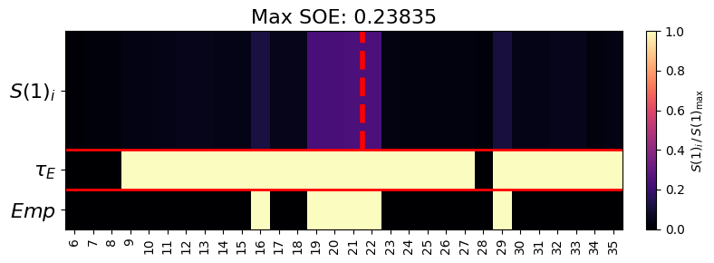
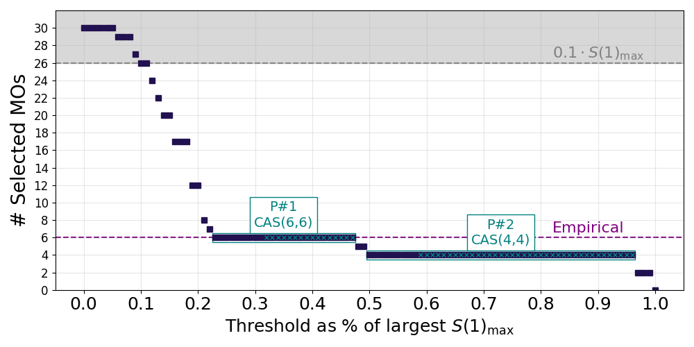
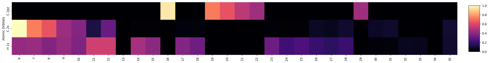
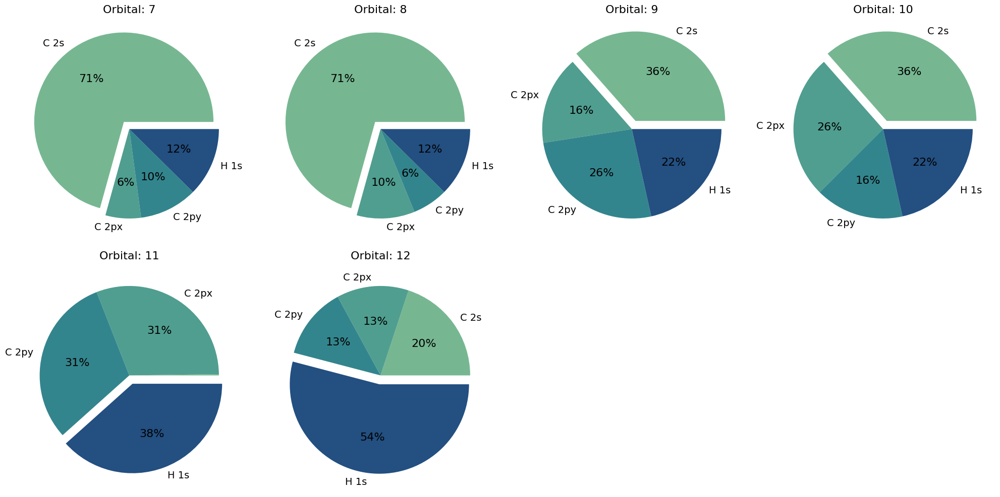

Tutorials
The tutorials walk through the full AEGISS workflow using benzene as a running example.
Each notebook is self-contained and builds on the previous one. The input geometries used
by the notebooks live alongside them in docs/tutorials/data/.
| Notebook | Topic |
|---|---|
| 01 — SCF & Localization | Building the molecule, running HF/DFT, scalar relativistic corrections (X2C), orbital localization (Boys, PM, ER, IBOs, IAOs, NOs, FNOs) |
| 02 — DMRG & Entropy | DMRGConfig, running DMRG, inspecting single-orbital entropies, entropy screening |
| 03 — AO Projection | ProjectionConfig, AO-projection selection, thresholds and top-N ranking |
| 04 — Full Pipeline | End-to-end AEGISS pipeline with all four config objects |
| 05 — Unrestricted (UHF) | What changes for a UHF reference: 3-D mo_coeff, symm_type="SZ", spin_soe, split α/β selection, per-channel thresholds |
Algorithm overview
Inputs
- Molecular structure: \(\{\mathcal{R}\}\)
- Mean-field method and basis set
- Correlated wavefunction method: \(\mathcal{W}\) (DMRG via block2)
- AO groups: \(\mathcal{D}\) — PySCF
ao_labelsstrings, e.g."Fe 3d","C 2pz" - Entropy threshold: \(\tau_E\) (default: \(0.1 \times S(1)_{\max}\), configurable)
- AO cutoff: \(\epsilon_D\) or rank threshold \(n_D\)
Output
Final active orbital space: \(\{\psi_r\}\)
Step 1 — Atom labeling and AO group definition
Partition the molecule into chemically meaningful clusters \(\mathcal{C}_i\) (e.g. metal
centre, ligand π system, σ framework). For each cluster define an AO group
\(D_i \in \mathcal{D}\) as a set of PySCF ao_labels strings.
MolTagger
aegiss.utils.mol_tagger.MolTagger provides an interactive 3D viewer for selecting
atoms and auto-generating ao_labels strings ready to paste into ProjectionConfig.
Step 2 — Mean-field calculation
Perform HF or KS-DFT
to obtain the MO coefficient matrix \([\mathbf{C}]_{\mu p}\), then select orbitals belonging
to the active region \(\mathbf{A}\) defined by the CAS window (ncas, nelecas).
Optional solvation — for molecules in solution, pass solvent_info=(model, dielectric_constant)
to run_scf. Two implicit-solvent families are supported
(PySCF solvation docs):
| Model | Key | Notes |
|---|---|---|
| IEF-PCM | "IEF-PCM" |
ISO standard; general purpose |
| C-PCM | "C-PCM" |
Conductor-like limit; slightly cheaper |
| DD-COSMO | "DDCOSMO" |
Linear-scaling; good for large systems |
The solvation wrapper is fully composable with the relativistic parameter and
propagates into the DMRG integral step transparently via CASCI.get_h1eff.
Optional scalar relativistic correction — for systems containing transition metals
or heavier elements, pass relativistic='x2c' to run_scf to apply the
exact two-component (X2C) transformation.
The relativistic one-electron Hamiltonian propagates automatically into the DMRG integral
step via CASCI.get_h1eff.
Optional orbital localization — canonical MOs can be transformed before DMRG to improve physical interpretability of entropy screening:
| Key | Method | Criterion |
|---|---|---|
"boys" |
Foster–Boys | Minimum orbital spread |
"pm" |
Pipek–Mezey | Maximum atomic charge; preserves σ/π separation |
"er" |
Edmiston–Ruedenberg | Maximum self-repulsion energy |
"ibos" |
Intrinsic Bond Orbitals | Maximum population on intrinsic atomic orbitals |
"iaos" |
Intrinsic Atomic Orbitals | Minimal-basis-like basis of the occupied space (returns the IAO basis, not a replacement for mo_coeff) |
"nos" |
Natural Orbitals | Diagonalise correlated 1-RDM |
"fnos" |
Frozen Natural Orbitals | As NOs but with a frozen core |
Localized orbitals have no orbital energies, so the index-based CAS window built on them is no longer a Fermi-level window; see the methodology.
Step 3a — Correlated wavefunction in active region
AEGISS solves the active-space problem with DMRG, run through the block2main
subprocess (run_dmrg_subprocess). PySCF builds the CAS integrals (a FCIDUMP) for
the active region \(\mathbf{A}\); block2 then converges the DMRG ground state
\(|\Psi\rangle\) and writes out the spin-resolved one-particle density matrix (1pdm)
and the diagonal number–number correlation (1npc) — together these provide
everything needed for the single-orbital entropies below.
One-orbital reduced density matrix
For each orbital \(p \in \mathbf{A}\), the one-orbital reduced density matrix \(\rho^p\) is defined by tracing \(|\Psi\rangle\langle\Psi|\) over all orbitals except \(p\):
In the local occupation basis \(|\alpha\rangle \in \{|0\rangle,\, |\!\uparrow\rangle,\, |\!\downarrow\rangle,\, |\!\uparrow\downarrow\rangle\}\) a single orbital carries no coherences, so \(\rho^p\) is diagonal and its four eigenvalues are precisely the occupation probabilities \(\{\omega_{\alpha,p}\}\) (with \(\omega_{\alpha,p} \geq 0\) and \(\sum_\alpha \omega_{\alpha,p} = 1\)).
Rather than forming \(\rho^p\) explicitly, AEGISS reconstructs these probabilities from
the DMRG one-particle observables: the spin occupations \(\langle n_{p\uparrow}\rangle\),
\(\langle n_{p\downarrow}\rangle\) (diagonal of the 1pdm) and the double occupancy
\(d_p = \langle n_{p\uparrow} n_{p\downarrow}\rangle\). The double occupancy is recovered
from the diagonal of the number–number correlation, since
\(\langle n_p^2\rangle = \langle n_p\rangle + 2\,d_p\) for \(n_p = n_{p\uparrow} + n_{p\downarrow}\):
which fixes the four occupation probabilities as
Step 3b — Entropy-based reduction
For each orbital \(p\), the single-orbital entropy is the von Neumann entropy of \(\rho^p\) — equivalently, the Shannon entropy of its four occupation probabilities:
where any state with \(\omega_{\alpha,p} \to 0\) contributes nothing to the sum.
\(S(1)_p\) quantifies the entanglement of orbital \(p\) with the rest of the active space. It is zero for orbitals that are fully occupied or fully empty (doubly occupied core or unoccupied virtual), and maximal for orbitals in a strongly correlated superposition.
Select entropy-active orbitals:
fraction_type |
Threshold \(\tau_E\) |
|---|---|
'r' (relative, default) |
\(\text{fraction} \times S(1)_{\max}\) |
'a' (absolute) |
\(\text{fraction}\) directly |
The threshold is applied independently to occupied and virtual subspaces
(ranking='subset', default) or to all CAS orbitals jointly (ranking='global').
Diagnostics
The entropy spectrum is best read visually with
soe_heatmap and th_plots
(utilities reference). For a benzene CAS(30,30), the entanglement concentrates on the
π-type frontier orbitals, and the threshold curve exposes two plateaus — CAS(6,6) and,
at higher thresholds, the π-only CAS(4,4):


Step 4 — AO projection for each group \(D \in \mathcal{D}\)
For each AO group \(D\) (e.g. "Fe 3d", "C 2pz"), a weight \(w_p^D\) is assigned to
every entropy-filtered orbital \(\psi_p \in \{\psi^{\mathbf{A}}_E\}\) that measures how
much of that orbital lives in the target chemical subspace.
Cross-overlap matrix \(\mathbf{O}^D_E\)
The projection is performed against a secondary minimal basis (default: minao) rather
than the original working basis. Let \(\{\phi^D_\mu\}\) be the AOs of the minimal basis
restricted to the atoms and angular-momentum channels defined by \(D\), and let
\(\{\phi^E_\nu\}\) be the AOs of the original molecular basis. The cross-overlap matrix is:
computed via pyscf.gto.intor_cross("int1e_ovlp", ...). Using a minimal basis for \(D\)
removes noise from diffuse or polarisation functions that are present in the working basis
but are not chemically meaningful for the selection criterion.
Projection and weight
The MO coefficients \([\mathbf{C}_E]_{\nu p}\) expand each orbital \(\psi_p\) in the original basis. The projection of \(\psi_p\) onto the target AO subspace \(D\) is:
The weight is the \(\ell^1\) norm of this projection over all \(\mu \in D\):
A large \(w_p^D\) means orbital \(\psi_p\) has strong overlap with the target AO characters; a value near zero means it is essentially orthogonal to that subspace.
Normalisation
contribution_type |
Weight used for thresholding |
|---|---|
'a' (absolute) |
\(w_p^D\) directly |
'r' (relative) |
\(\tilde{w}_p^D = w_p^D \,/\, \max_{p'} w_{p'}^D \in [0,1]\) |
Selection
Two modes are available, controlled by ProjectionConfig:
- Threshold — keep all \(\psi_p\) where \(w_p^D \geq \epsilon_D\)
- Top-N — keep the \(n_D\) orbitals with the largest \(w_p^D\), regardless of magnitude
Diagnostics
The projection weights \(w_p^D\) can be inspected with
plot_ao_contribution (a per-MO / per-AO-group heatmap)
and the per-orbital composition with
plot_pie_contribution (utilities reference). For benzene,
the π orbitals concentrate on C 2pz while the σ framework mixes C 2s/C 2px/H 1s:


Step 5 — Active space construction
Merge selected sets across all AO groups: